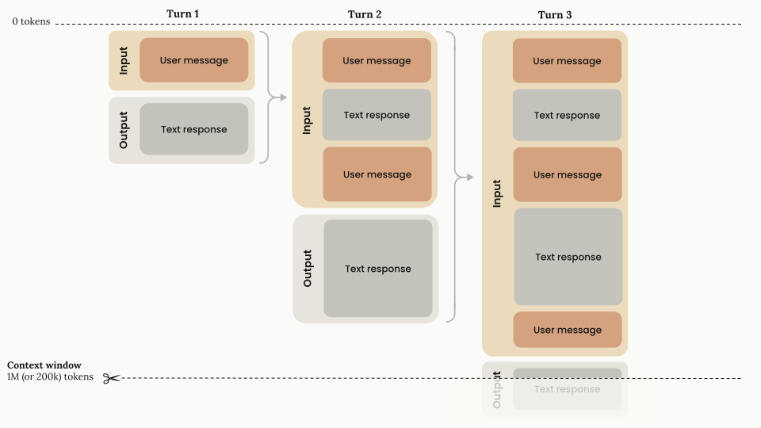
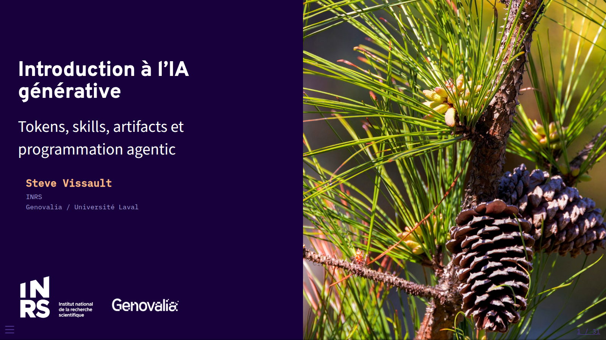
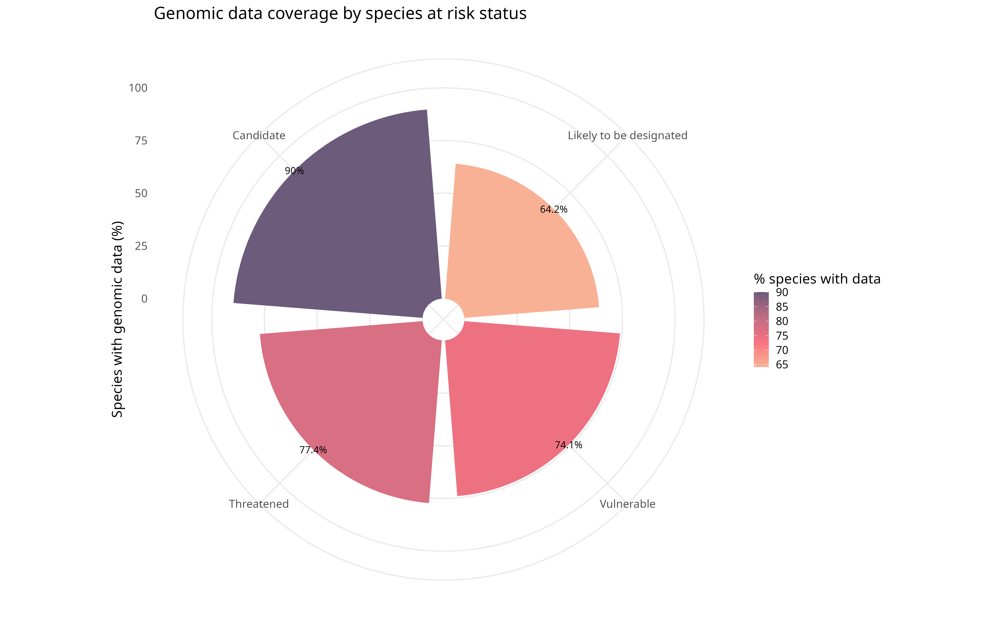

Introduction à l’IA générative
Tokens, skills, artifacts et programmation agentic
INRS
Genovalia / Université Laval
Contexte : la course à l’overfitting
La croissance du nombre d’hyperparamètres
Depuis 2010, le nombre de paramètres des modèles d’IA les plus notables double environ chaque année.

Croissance exponentielle des paramètres dans les systèmes d’IA notables — Our World in Data / Epoch AI
Une course qui ralentit sur un front, accélère sur un autre
- Les comptes de paramètres publiés stagnent depuis ~3 ans autour de 1000 milliards — les labos ont cessé de les divulguer (OpenAI, Anthropic, Google)
- Le calcul d’entraînement (compute), lui, continue de croître de 4-5× par an (Epoch AI)
- La course s’est déplacée : moins “plus de paramètres”, plus de données, de calcul au moment de l’inférence (reasoning), et d’outillage agentique
- Investissements massifs en infrastructure (centres de données, puces) plutôt qu’en taille brute du modèle
Les principaux fournisseurs
| Fournisseur | Modèles phares | Approche |
|---|---|---|
| Anthropic | Claude (Opus, Sonnet, Haiku) | Propriétaire, focus sécurité/alignement |
| OpenAI | GPT, o-series | Propriétaire |
| Google DeepMind | Gemini | Propriétaire, intégré à l’écosystème Google |
| Meta | Llama | Poids ouverts |
| xAI | Grok | Propriétaire |
| Mistral AI | Mistral, Magistral | Mixte (ouvert + propriétaire), européen |
| DeepSeek | DeepSeek-V/R | Poids ouverts, entraînement très optimisé en coût |
Note
Paysage qui évolue vite — écarts de performance entre labos de tête de plus en plus faibles d’une génération à l’autre.
Tokens & contexte
C’est quoi un token ?
- Unité de découpage du texte (sous-mot, ~4 caractères en moyenne en anglais)
- Un modèle ne lit pas des mots ou des caractères, mais une séquence de tokens
- Tout compte comme tokens : prompt système, historique, résultats d’outils, images, réponse générée
Exemple (tokeniseur BPE, cl100k_base) :
La biodiversité du Québec se mesure aussi par ses séquences génomiques.
17 tokens pour 71 caractères / 11 mots — noter les mots découpés en morceaux (biod|ivers|ité, sé|quences, gén|om|iques)
Note
1 token ≈ 0,75 mot (anglais). Le français tokenise généralement un peu moins efficacement.
La fenêtre de contexte
La “context window” = tout ce que le modèle peut voir en même temps (mémoire de travail, pas la mémoire d’entraînement).

Diagramme officiel Anthropic : accumulation des tours dans la fenêtre de contexte
Taille de contexte par modèle
- Modèles récents (Sonnet 5, Opus 5, Fable 5.1, …) : 1 million de tokens
- Modèles antérieurs (Sonnet 4.5, Haiku 4.5) : 200 000 tokens
- Plus de contexte ≠ toujours mieux : au-delà d’un certain seuil, la précision se dégrade (context rot) → curer ce qu’on met dans le contexte compte autant que sa taille
Le coût des modèles
Facturation au token, prix différents pour l’entrée (input) et la sortie (output) — l’output coûte typiquement 5× l’input.
| Modèle | Input (\(/M tokens) | Output (\)/M tokens) | |
|---|---|---|
| Haiku 4.5 | 1 | 5 |
| Sonnet 5 | 2 | 10 |
| Opus 5 | 5 | 25 |
| Fable 5 / 5.1 | 10 | 50 |
Note
Le cache de prompt réduit le coût d’un contexte répété jusqu’à 90 % (hit = 10 % du prix input standard).
Skills
C’est quoi un skill ?
- Un dossier structuré d’instructions (+ scripts, ressources) que l’agent peut découvrir et charger au besoin
- Permet d’empaqueter et partager un savoir-faire (un prompt, une procédure, un style) plutôt que de le retaper à chaque fois
- Chaque skill = un fichier
SKILL.md(nom, description, instructions), avec fichiers optionnels dans/scripts,/references,/assets
Pourquoi c’est utile en équipe
- Standardise une procédure récurrente (ex. : template de rapport, checklist de revue de code, style de commit)
- Se partage comme du code : un dossier versionné dans un dépôt ou un plugin
- Progressive disclosure : l’agent ne voit d’abord qu’une courte description ; il charge le détail seulement s’il en a besoin → économise des tokens de contexte
Note
Référence : platform.claude.com/docs/en/agents-and-tools/agent-skills/overview — dépôt d’exemples : github.com/anthropics/skills
Exemple de skill
.claude/skills/couverture-genomique/SKILL.md — standardise la génération du graphique de couverture pour l’équipe :
---
name: couverture-genomique
description: >
Génère le graphique de couverture génomique par statut de risque
(LEMV/COSEPAC) à partir du pipeline QCGenomLandscape. Utiliser quand on
demande un résumé ou une figure de couverture par statut de conservation.
---
1. Charger les données via `load_risk_status()`
2. Appeler `plot_risk_status_coverage(risk_genes, jurisdiction = "QC")`
3. Exporter en PNG + SVG dans `results/`
4. Résumer les 3 statuts avec la plus faible couverture en 2 phrases- N’importe qui de l’équipe tape “génère la couverture génomique” → même figure, mêmes conventions, à chaque fois
- Le skill vit dans le dépôt, versionné et revu comme du code
Artifacts
C’est quoi un artifact ?
- Un contenu généré par l’agent (code, document, page web, visualisation) affiché à part de la conversation, dans son propre espace
- Vit dans son propre “espace de travail” : on peut le rouvrir, le mettre à jour, le partager par lien
- Contrairement à un bloc de code dans le chat, il est persistant et interactif (ex. : une page HTML qui tourne réellement, un tableau qu’on peut re-render)
Cas d’usage typiques
- Prototype d’interface ou de visualisation à itérer sans réécrire toute la conversation
- Document destiné à être partagé/édité par d’autres personnes
- Rapport, dashboard ou diagramme qui doit rester consultable après la session
Exemple 1 — Un design (cette présentation)
Cette présentation elle-même (thème Genovalia) est un exemple d’artifact : générée, itérée et mise à jour dans une conversation, réutilisable telle quelle.

Slide de titre — thème Genovalia (Quarto + revealjs)
Exemple 2 — Une visualisation de données
Un graphique produit dans le cadre du projet de portrait génomique (pipeline QCGenomLandscape) : couverture génomique par statut de risque (LEMV/COSEPAC).

Couverture génomique par statut de risque — results/risk_status_coverage.png
MCP
C’est quoi le Model Context Protocol ?
- Standard ouvert (Anthropic, nov. 2024) pour connecter un agent à des données et des outils externes
- Avant MCP : une intégration sur mesure par outil/API → travail dupliqué pour chaque agent et chaque source
- Avec MCP : un seul protocole, deux rôles — un serveur qui expose des capacités, un client qui s’y connecte
Note
Analogie : un port USB-C pour les agents — un connecteur standard plutôt qu’un câble propriétaire par appareil.
Structure d’un projet MCP (serveur Python)
weather-server/
├── pyproject.toml
└── src/weather/
├── server.py # FastMCP("weather") — point d'entrée
├── tools.py # @mcp.tool() → get_forecast(), get_alerts()
├── resources.py # @mcp.resource() → données exposées (lecture seule)
└── prompts.py # @mcp.prompt() → gabarits réutilisables- Un module = une capacité : fonctions Python décorées, découvertes automatiquement par le SDK
- Le nom de fonction + sa docstring sont ce que l’agent voit pour décider quand l’appeler
Exemple : une fonction (tool) et un prompt
from mcp.server.fastmcp import FastMCP
mcp = FastMCP("weather")
@mcp.tool()
async def get_forecast(latitude: float, longitude: float) -> str:
"""Get the weather forecast for a location."""
...
@mcp.prompt()
def summarize_alerts(state: str) -> str:
"""Template prompt: summarize active weather alerts for a state."""
return f"Résume les alertes météo actives pour {state}."- Tool = une action que l’agent peut invoquer directement
- Prompt = un gabarit réutilisable que l’humain ou l’agent déclenche pour lancer une tâche standard
Ce qu’un serveur MCP peut exposer
Tools : des actions que l’agent peut invoquer (appel d’API, requête, calcul)
Resources : des données de contexte (contenu de fichier, enregistrement, réponse d’API)
Prompts : des gabarits d’interaction réutilisables
Écosystème déjà riche de serveurs communautaires (GitHub, Slack, bases de données, …) : brancher un agent sur un nouvel outil devient une question de configuration, pas de développement
Programmation agentic
Le bloc de base : le LLM augmenté
Un modèle seul répond ; un modèle augmenté peut chercher de l’information, appeler des outils et garder de la mémoire.
Diagramme officiel Anthropic : le LLM augmenté
La boucle agentique
Un agent = un LLM qui utilise des outils en boucle, en se basant sur le retour de l’environnement à chaque étape (résultat d’outil, sortie de code) pour ajuster la suite.
Diagramme officiel Anthropic : boucle d’un agent autonome
Exemple concret : un agent de code

Diagramme officiel Anthropic : flux d’un agent de codage (ex. Claude Code)
- Lit le code existant, planifie, édite des fichiers, exécute des tests
- Ground truth à chaque étape (résultat de test, sortie de commande) plutôt qu’un seul gros prompt
Workflows vs agents
- Workflow : chemin prédéfini, le code orchestre le LLM et les outils (prévisible, plus simple à déboguer)
- Agent : le LLM décide lui-même de la suite des actions (flexible, adapté aux tâches ouvertes/imprévisibles)
- Recommandation Anthropic : commencer simple (un seul appel, un workflow), n’ajouter une boucle agentique que si la tâche l’exige vraiment
Ce que ça implique pour les devs
Pistes de réflexion
- Le rôle du dev glisse vers la revue et l’orchestration : lire/valider du code produit par un agent plutôt que taper chaque ligne
- Risque de perte de compréhension fine du code si on accepte sans relire — la dette technique peut devenir invisible
- Un agent avec accès à des outils (MCP, exécution de code, accès réseau) a une surface d’action réelle — les erreurs ne restent pas dans le chat
- Données sensibles (ex. données génomiques, spécimens, coordonnées d’espèces menacées) : ce qui part dans un prompt/contexte quitte votre machine — vérifier les politiques de rétention/entraînement du fournisseur
- Coût et contexte ne sont pas gratuits : un agent qui boucle mal peut consommer beaucoup de tokens pour peu de valeur
Bonnes pratiques
- Toujours relire et tester le code/les résultats générés avant de les intégrer — jamais de merge sans revue humaine
- Donner un contexte précis et curé plutôt que tout déverser dans le prompt (context engineering > gros contexte)
- Itérer par petites étapes vérifiables (ground truth à chaque étape : test qui passe, sortie de commande) plutôt qu’un seul gros prompt
- Standardiser les tâches d’équipe récurrentes avec des skills versionnés, revus comme du code
- Choisir le modèle selon la tâche (Haiku pour du simple/rapide, Sonnet/Opus pour du complexe) et utiliser le cache de prompt pour limiter les coûts
- Ne jamais connecter un agent à des serveurs MCP ou des identifiants non fiables/non vérifiés
- Garder un humain responsable de la décision finale, surtout sur du code scientifique/publié
Merci
Questions
Steve Vissault — INRS / Genovalia